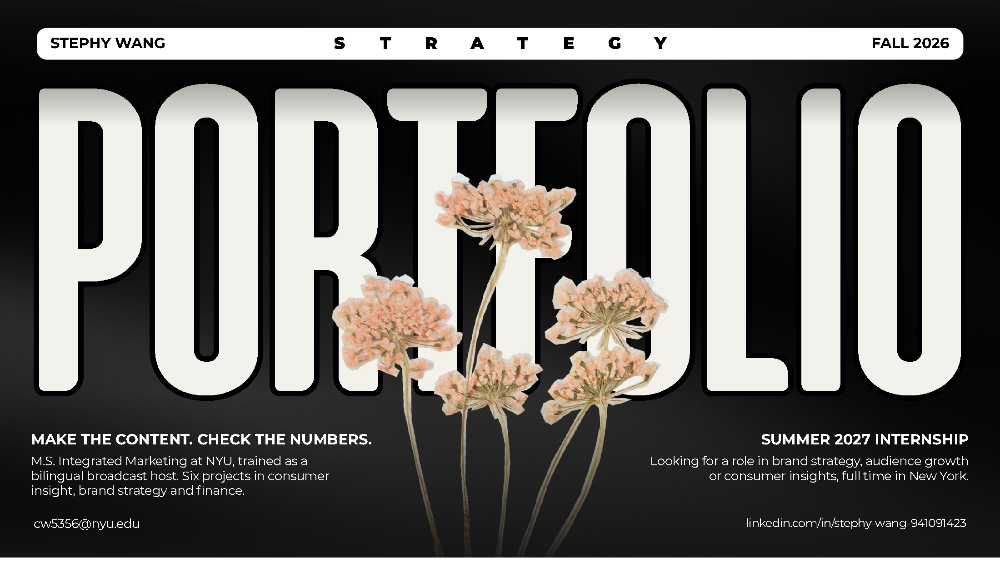
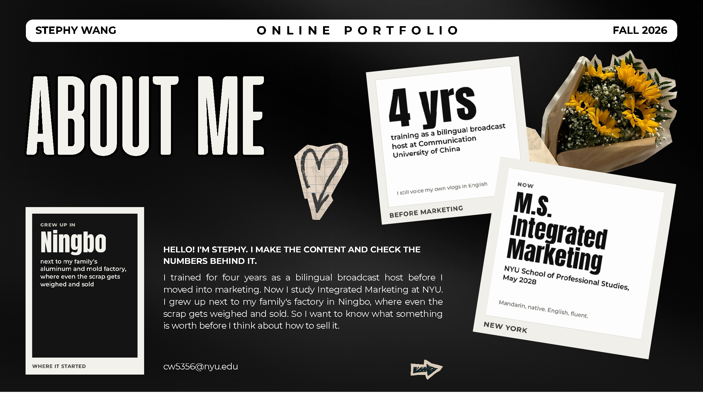

Media Intern
Campaign and competitor analysis with Brandwatch, BuzzSumo and Google Analytics, contributing to a 15% increase in campaign ROI. Produced Rednote and Weibo content, including videos above 500K views.

Creative instincts. Analytical thinking.
I connect what audiences say, what they do, and what brands should do next.
01 / Academic projects · Fall 2026
Consumer evidence, brand decisions and the numbers behind them. Each project identifies my contribution.
02 / A little context
I trained for four years as a bilingual broadcast host before moving into marketing. Now I study Integrated Marketing at NYU.
I grew up next to my family's factory in Ningbo, where even the scrap gets weighed and sold. So I want to know what something is worth before I think about how to sell it.
M.S. Integrated Marketing · NYU · May 2028
English & Mandarin

03 / In practice
Campaign and competitor analysis with Brandwatch, BuzzSumo and Google Analytics, contributing to a 15% increase in campaign ROI. Produced Rednote and Weibo content, including videos above 500K views.
Analyzed TikTok user behavior using SPSS and Tableau and rebuilt the posting strategy, growing exposure from a few thousand to 100K+ views.
Secured collaborations with 20+ KOLs and 10+ venues for youth entrepreneurship programs. Coordinated a cross-border forum reaching 10K+ online views.
Served 50+ buyer groups daily at peak and supported 10+ qualified accounts from fitting to order. Managed inventory and visual merchandising for a 424-piece collection.
Also: CUCN Student Union · China Education Symposium · FIE Fencing Junior World Championships
04 / Let's connect
I'm looking for a full-time internship in New York in brand strategy, audience growth or consumer insights. If your team connects creativity with evidence, I'd love to hear from you.
cw5356@nyu.edu ↗CONNECT ON LINKEDIN ↗